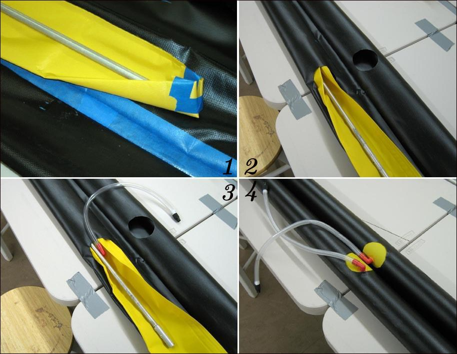

| Sonnet ( Sleeves) | Menu Previous Page Next Page |
|

1. Fold the end of the first sponson to form a wedge and tape to hold in place. Slip the aluminum tube into the wedge.
2. Insert the sponson into the sleeve opening and push until the first tube section ends. 3. Attach the second tube section and insert the sponson until the valve stem is centered in the opening 4. Tape the other end of the sponson and insert the remaing half of the sponson into the sleeve. Insert the remaining 3 sponsons into their sleeves. Inflate the sponsons. The tape will pull apart due to the pressure and the sponsons will inflate fully. Remove the sponsons to continue construction. |
|